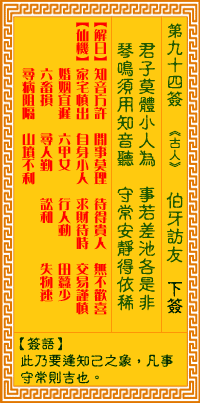

观音灵签第九十四签 【伯牙访友】 |
 | |||
小人君子别贤愚 事有差讹合是非 琴遇知音当鼓操 争如定静得便宜 |
||||
| 【吉凶】 | 中平签 | 【宫位】 | 戌宫 | |
| 【签语】 | 此卦要逢知己之象，凡事守常则吉也。 | |||
| 【解曰】 | 知音方许 闲事莫理 待得贵人 无不欢喜 | |||
| 【仙机】 | 此签家宅慎出，自身小人，求财待时，交易谨慎，婚姻宜迟，六甲女，行人动，田蚕少，六畜损，寻人勤，讼和，失物速寻，病阻隔，山 坟不利。 | |||
| 【详解】 | 须知君子与小人有贤愚之分，但事情的对错与是非要如何区别呢?就像抚琴若遇知己时即能一拍即合，与其争执不休，还不如沉默是金来的有利吧! 知音行正，百事莫理，若人遇贵，无价珍美。此签未遇知音之象，凡事耐性则吉。 本签者。君尔未遇知音之象也。凡事耐性行之。为之则趋吉也。平素多信仰神佛扶之。能遇贵人之时。君即可争如定静得便宜耶。易言之。汝在功行圆满之刻。必 能光大门户。知音行正百事莫理若人遇贵无价珍美耶。 此签有”争不如静”之意。提醒当事人，凡事耐性。每个人都有自己的一套看法与想法，有时难免与人意见相左。然而公说公有理、婆说婆有理，有时与其争论激 辩，不如保持缄默。即使别人有误解、不了解，又何必放在心上，只要心中清亮，知道自己在做什么就好，实在无须在意别人怎么看、怎么说。 | |||
| 【典故】 | 伯牙是春秋时代人物，善弹琴，相传伯牙操琴，琴声高妙，只有钟子期才知其音，二人成为知音朋友。子期在江旁会见伯牙，谈论琴中意 ，高山流水声。第二年，伯牙到马鞍山造访知音好友子期，知道钟子期已死，伯牙伤心极了，遂破琴弦，从此不在弹琴。伯牙是晋国人，钟子期是楚国的一名樵夫（砍柴人）。今 古奇观 | |||